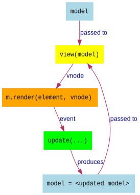
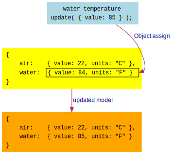

In the previous lesson, 08 - Accumulator, we changed our strategy
for accumulating updates. We switched to sending objects on the update stream, and we changed our
accumulator function to use Object.assign to merge updates into the model. This enabled us to
use objects for our model rather than just numbers.
Now, we just have the temperature in our example. Obviously, a larger application will have many
more elements in the view. We'd like each element to have its own model, but we still want to
have a single top-level model and a root view(model) function. How can we accomplish this?
Let's take the example of having two temperature elements in our app: one for the air temperature
and one for the water temperature. We want two instances of our temperature element, each with
its own { value: ..., units: ... } model, but we want a top-level model that differentiates one
from the other:
{ air: { value: 22, units: "C" },
water: { value: 84, units: "F" }
}
Having a single top-level model gives us a single source of truth and combined with a root
view = function(model), we continue having a simple reactive loop with the Meiosis pattern:

To reach our goal, we use a technique that I call nesting.
Remember that we had a createView function which returned a view function. By calling
view(model), we were able to render (and re-render) the temperature.
Our goal is to have two temperatures in the view, but we want to reuse the same code, without changing it. So each temperature still deals with a model that looks like:
{ value: 22, units: "C" }
But we want to have a top-level model that looks like:
{ air: { value: 22, units: "C" },
water: { value: 84, units: "F" }
}
We'll rename the createView function to createTemperature, but it will work the same as
before. Our top-level createView function will create two instances of temperature:
var createView = function(update) {
var air = createTemperature(update);
var water = createTemperature(update);
return function(model) {
return [
air(model.air),
water(model.water)
];
};
};
The idea is that air and water are the view(model) functions for temperature, and our
top-level view function calling air(model.air) and water(model.water) to render the two
temperature instances one after the other. Notice that we pass model.air and model.water
from the top-level model so that each instance has its "sub-model" of { value: ..., unit: ... }
and continues to work as it did before, without needing to "know" about the top-level model:
Just to make things a little more obvious, we'll add a label parameter to the createTemperature
function and render the label in the view:
var createTemperature = function(update, label) {
// ...
var view = function(model) {
return m("div.temperature", [
label, " Temperature: ", // ...
// ...
]);
};
return view;
}
// ...
var air = createTemperature(update, "Air");
var water = createTemperature(update, "Water");
That way, we can clearly see the Air and Water temperature in the view. Below is the code that
we have so far. Note that updates don't work yet, so clicking on Increase, Decrease, and
Change Units won't have any effect.
You can see each temperature being rendered from the top-level model, without the temperature view
needing to know about the air and water - instead, it continues to use model.value and
model.units as before.
The problem now is, how do we get updates to work? Let's address that next.
The reason that updates don't work is that our temperatures are sending updates as:
update({ value: 85 });
But our top-level scan uses Object.assign to merge the update with the top-level model, so
we end up with:
{ air: { value: 22, units: "C" },
water: { value: 84, units: "F" },
value: 85
}
What we want instead is to nest the air and water updates at their respective properties:

We can achieve this by wrapping the update function so that when a temperature calls:
update({ value: 85 });
We intercept the incoming { value: 85 } and change it so that instead, we have:
update({ path: "water", data: { value: 85 } });
Then, our accumulator function can use path and data to update the top-level model accordingly:
var models = m.stream.scan(
function(model, obj) {
model[obj.path] = Object.assign(model[obj.path], obj.data);
return model;
},
{ air: { value: 22, units: "C" },
water: { value: 84, units: "F" }
},
update);
Notice how we've moved up the call to Object.assign so that it operates on the obj.path. Then
we set the result back to model[obj.path], effectively "nesting" the update within the top-level
model.
update functionAs stated earlier, the goal here is not to have to change the temperature code. So the temperature
does not need to "know" that its updates are associated to the air or water path. It continues
to call update({ value: 23 }) or update({ value: 82, units: "F" }) as it did before.
We can do this by wrapping the update function so that we convert updates from plain data
into the form of { path: ..., data: ... } before calling the "real" update function:
var nest = function(update, path) {
return function(data) {
update({ path: path, data: data });
};
};
What we're doing here is creating a new function that will be a "stand-in" for the update
function that we pass to the temperature code. When the temperature code calls update(...),
it will effectively be calling the inner function(data), which turns around and calls
update with the converted object with path and data.

Now, to use the nest function, all we have to do is change this code:
var air = createTemperature(update, "Air");
var water = createTemperature(update, "Water");
To this code:
var air = createTemperature(nest(update, "air"), "Air");
var water = createTemperature(nest(update, "water"), "Water");
There you have it, instead of passing update directly, we use nest to wrap update with the
path that we specify, air and water. The temperature code does not need to change, and the
updates now work correctly, as you can see in the complete example below.
When you are ready, continue on to 10 - Deep Merge.
Meiosis is developed by @foxdonut00 / foxdonut and is released under the MIT license.